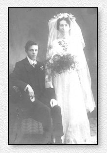

|
A tribute to our Australian cousins |
||
|
Robert Albert Pegrum Married Christchurch Cathedral, Grafton, NSW, Australia 27th December, 1911
|
 |
|
| Robert Albert Pegrum and Ruby Olive Rafferty
are the grandparents of Susan Pegrum Jones who has kindly shared this
and other items from her family archives. Susan has also sent us
copies of pages from the recent History of Nonconformity in Nazeing
which has new information that may help us discover the ancestry of our
common American ancestor, George Pegram of Williamsburg, Virginia.
Susan's ancestors operated an award
winning manufacturing company known as Hume & Pegrum Codials in NSW,
Australia. I particularly like the advertisement which appeared in
a circa 1880 magazine ad which we have
posted. We have other items which we will post as time
permits.
|
||